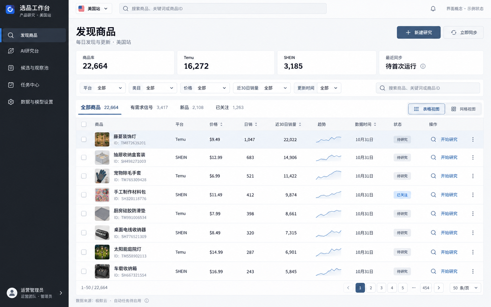
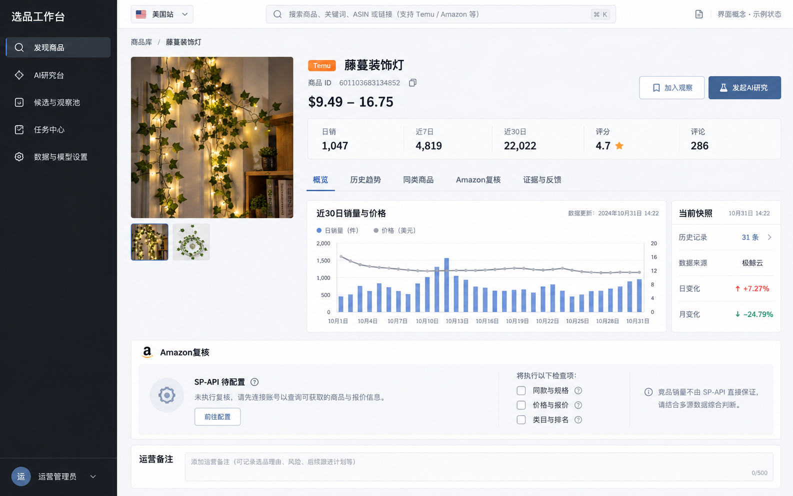
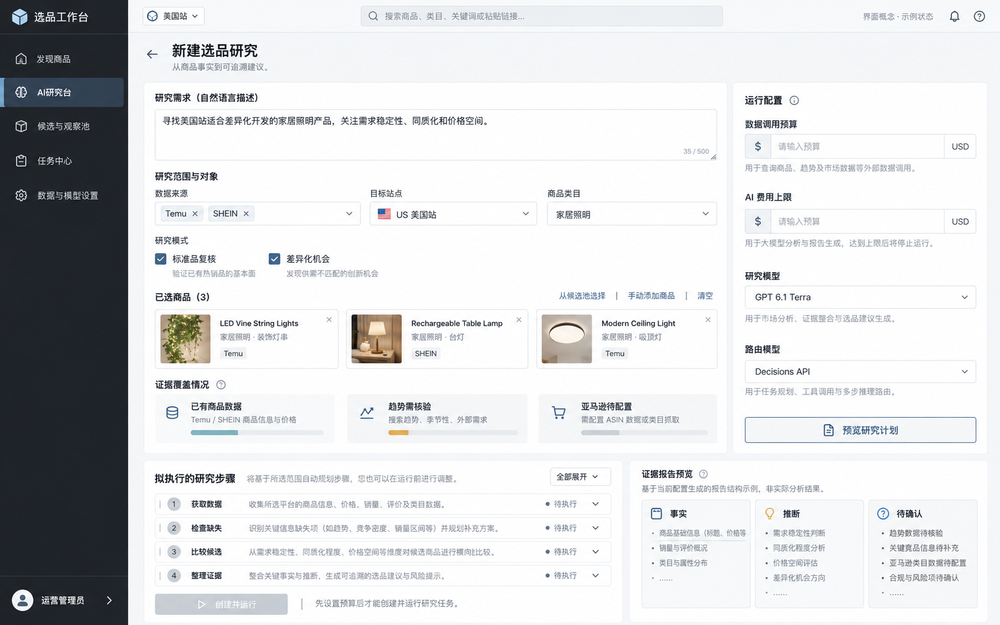
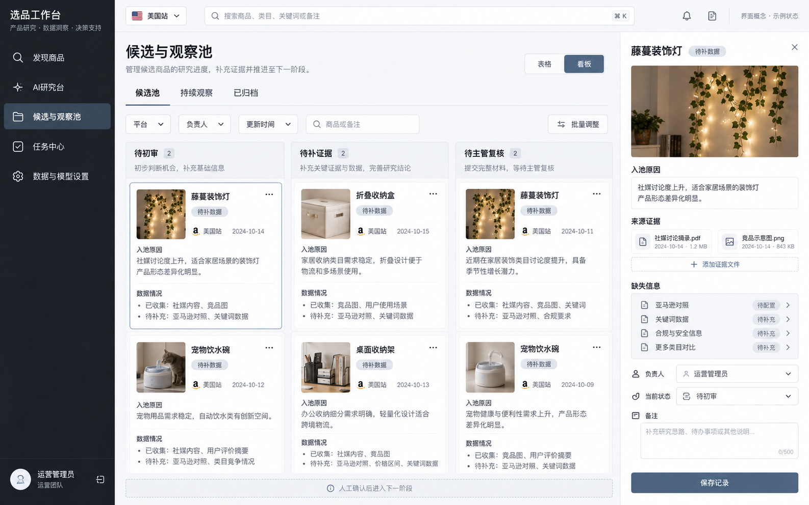
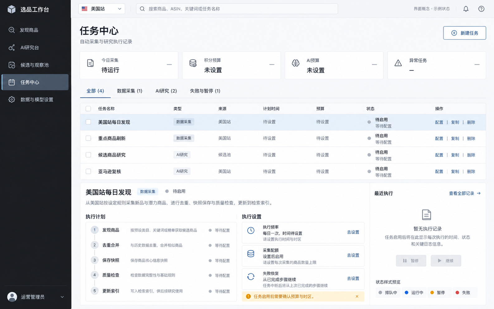
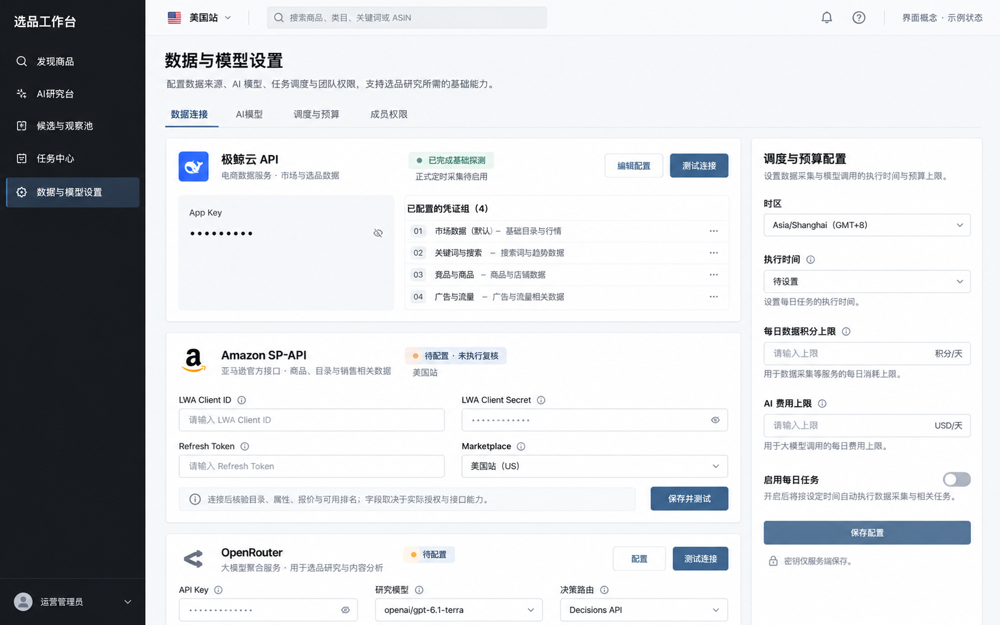
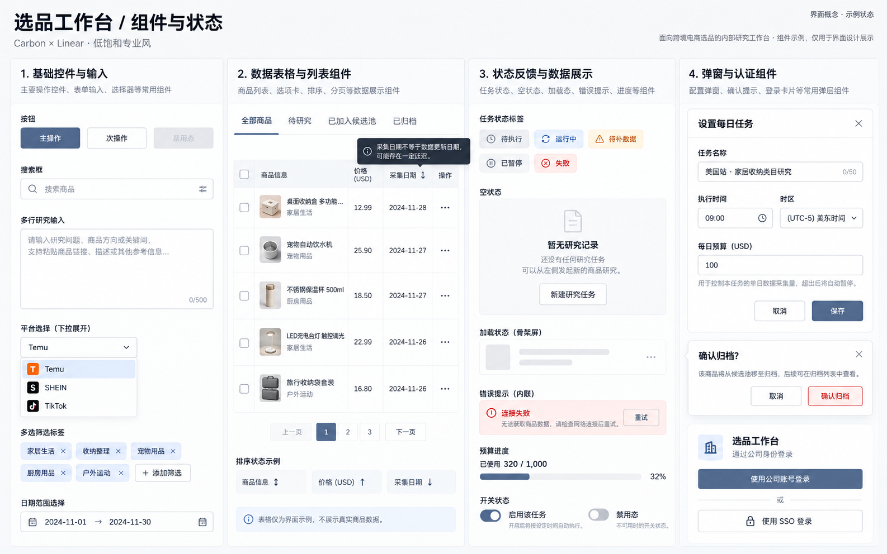

商品发现
商品库、筛选、排序、销量字段与数据日期。 查看原图

商品详情与亚马逊复核
商品事实、趋势及 Amazon 待配置面板。 查看原图

AI 研究台
研究任务、范围、预算、拟执行步骤和证据结构。 查看原图

候选与观察池
候选看板、人工处理状态与详情抽屉。 查看原图

任务中心
每日发现、重点刷新、研究与执行记录。 查看原图

数据与模型设置
极鲸云、SP-API、OpenRouter 与调度预算。 查看原图

控件与状态
筛选、表格、弹窗、登录、空态、错误与加载状态。 查看原图
